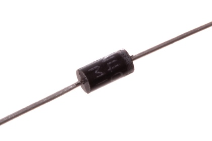
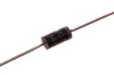
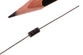

7.62 mm 1 Amp Diode 400v - DT014

Summary
Name: 7.62 mm 1 Amp Diode 400v
ID: DIOD-I03-X-A01-VI
Hex ID: DT014
WebPage: https://github.com/oomlout/oomlout-OOMP/wiki/DIOD-I03-X-A01-VI
Short URL: http://oom.lt/DT014
Revision History: https://github.com/oomlout/oomlout-OOMP/blob/master/parts/DIOD-I03-X-A01-VI/
| Type |
Size |
Color |
Description |
Index |
DIOD
Diode |
I03
7.62 mm |
X
|
A01
1 Amp |
VI
400v |
Images


About
This part is awaiting a description.
Specifications
| Info |
Value |
| Type |
Diode |
| Size |
7.62 mm |
| Description |
1 Amp |
| Index |
400v |
Extra Details
Spotted a mistake, want to add more? Let us know oomp@oomlout.com
All images and resources are licensed [CC BY-SA] unless otherwise stated (ie. the datasheets)